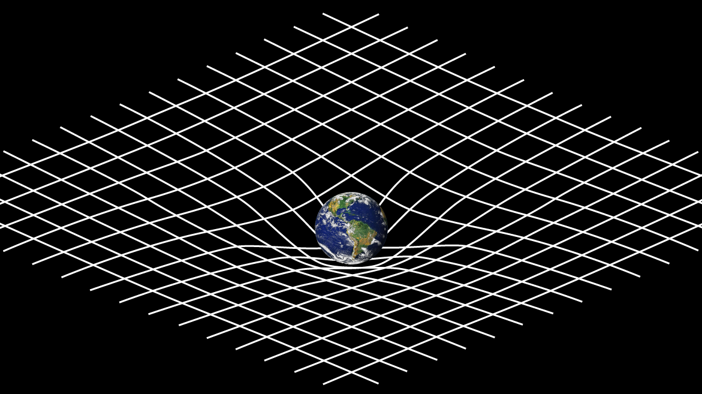
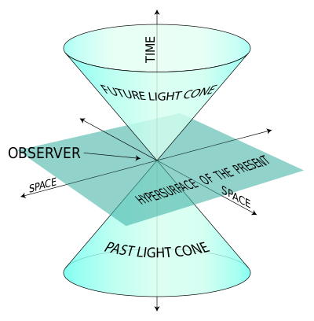

One of the most influencial minds of the 20th century.
The general theory of relativity, is the geometric theory of gravitation published by Albert Einstein in 1915 and is the current description of gravitation in modern physics. It provides a unified description of gravity as a geometric property of space and time or four-dimensional spacetime. Some predictions of general relativity differ significantly from those of classical physics, especially concerning the passage of time, the geometry of space, the motion of bodies in free fall, and the propagation of light.
Examples of such differences include gravitational time dilation, gravitational lensing, the gravitational redshift of light, the gravitational time delay and singularities/black holes. The predictions of general relativity in relation to classical physics have been confirmed in all observations and experiments to date.
Special Relativity is a scientific theory regarding the relationship between space and time. It was proposed by Albert Einstein in a paper published on 26 September 1905 titled “On the Electrodynamics of Moving Bodies”. Today, special relativity is proven to be the most accurate model of motion at any speed when gravitational and quantum effects are negligible.
Special relativity has a wide range of consequences that have been experimentally verified. They include the relativity of simultaneity, length contraction, time dilation, the relativistic velocity addition formula, the relativistic Doppler effect, relativistic mass, a universal speed limit, mass–energy equivalence, the speed of causality and the Thomas precession.
